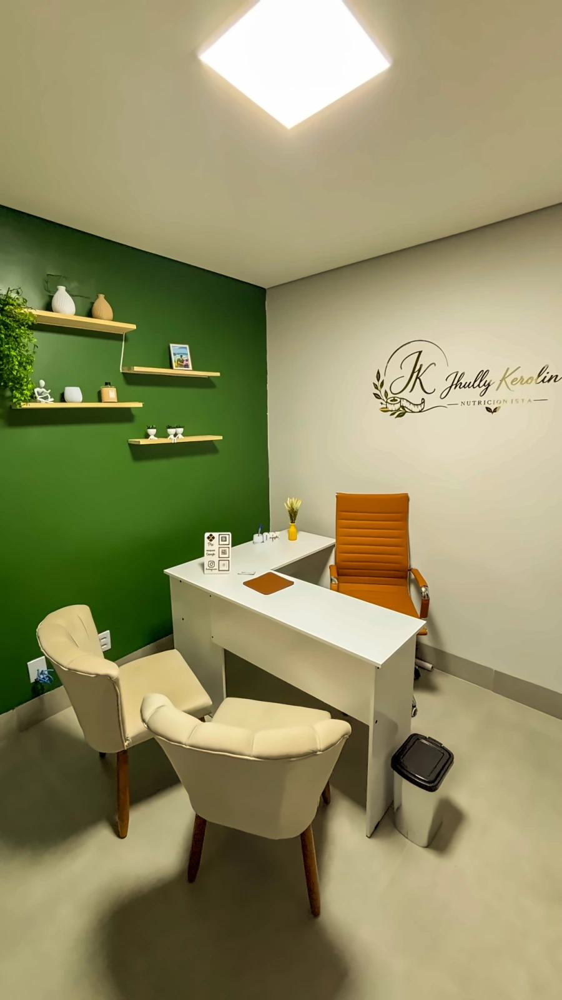
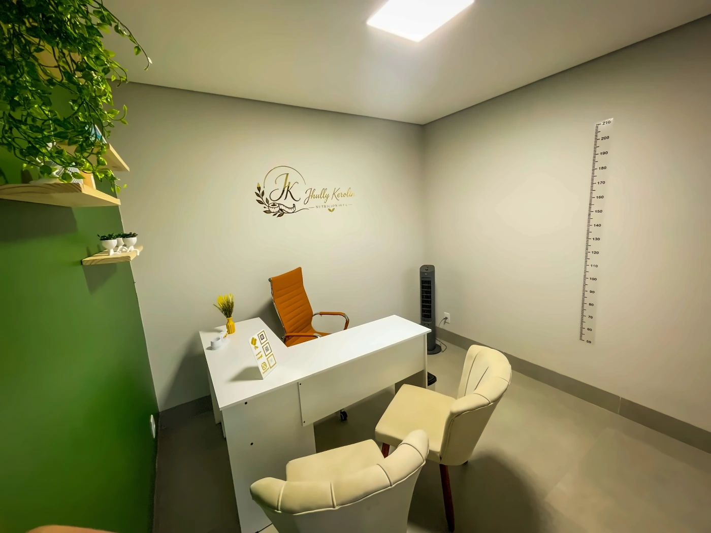

NUTRIÇÃO INDIVIDUALIZADA • UBERLÂNDIA + ONLINE
Nutrição pensada para a sua vida.
Estratégias práticas, acolhedoras e possíveis de manter, construídas a partir da sua rotina, dos seus objetivos e da sua realidade.
UMA NUTRIÇÃO QUE RESPEITA SUA REALIDADE
O plano não precisa mandar na sua vida.
Ele precisa caber nela.
Sou Jhully Kerolin, nutricionista, bacharel em Nutrição, pós-graduada em Materno Infantil e com capacitações em bariátrica e exames laboratoriais.
Meu trabalho é baseado em uma nutrição individualizada, que considera a rotina, os objetivos e a realidade de cada pessoa.
Individualizado
Plano construído a partir da sua realidade, preferências e objetivos.
Prático
Estratégias que funcionam dentro da sua rotina e não só no papel.
Acolhedor
Cuidado próximo, leve e profissional, sem extremos.
COMO FUNCIONA
Sua consulta em uma jornada clara.
01
Conhecemos sua rotina
Objetivos, hábitos, alimentação atual, preferências e contexto.
O ponto de partida é entender como sua vida realmente funciona, para construir algo possível de manter.
ESPECIALIDADES
Atendimento para diferentes momentos da sua vida.
Emagrecimento
Reeducação alimentar
Ganho de massa muscular
Saúde da mulher
Saúde metabólica
Comorbidades
Contexto bariátrico
Materno infantil
PRESENCIAL
Consulta no consultório
Avaliação individualizada, com bioimpedância quando aplicável à modalidade contratada.
ONLINE
Consulta por videochamada
Atendimento individualizado à distância, com construção do plano conforme os dados discutidos e enviados.
SERVIÇO
Bioimpedância
Disponível conforme a modalidade e também como serviço separado.
ACOMPANHAMENTOS
Escolha o formato ideal para você.
ESSENCIAL • 60 DIAS
Acompanhamento mais enxuto e estruturado.
Ideal para quem deseja começar com uma estratégia personalizada e um acompanhamento leve.
- Consulta inicial individualizada
- Plano alimentar personalizado
- Check-ins e ajustes
- Bioimpedância quando aplicável
ATENDIMENTO PRESENCIAL
Um espaço pensado para acolher.
Rua Olegário Maciel, nº 1322, Bairro Lídice, Uberlândia/MG.
Como chegar

O QUE MEUS PACIENTES DIZEM
Confiança construída no acompanhamento.
★★★★★
“A consulta com a Dra. Jhully foi uma grata surpresa, pois não esperamos muito em atendimentos on-line, no caso dela me senti, ouvida, acolhida, orientada e esclarecida. Uma profissional completa.”
Paciente • Google★★★★★
“Minha primeira consulta. Super atenciosa e bem didática nas explicações. Não deixou nenhuma das minhas dúvidas sem resposta.”
Paciente • Google★★★★★
“A Jhully me atendeu super bem, fez várias perguntas pra entender meu caso e me passou um ótimo plano alimentar personalizado com as coisas que eu como e prestou todo o suporte necessário. Obrigada!”
Paciente • GoogleFAQ
Dúvidas antes de começar?
A consulta é presencial ou online?+
As duas modalidades estão disponíveis. A presencial acontece em Uberlândia/MG e a online é realizada por videochamada.
A consulta presencial inclui bioimpedância?+
A bioimpedância está disponível conforme a modalidade contratada e também pode ser realizada como serviço separado.
Preciso fazer exames antes da consulta?+
Não é obrigatório. Caso tenha exames recentes, eles podem ser considerados na avaliação.
Como funciona o plano alimentar?+
É elaborado individualmente, considerando rotina, objetivos, preferências, hábitos e necessidades.
Tenho uma rotina corrida. Ainda consigo fazer acompanhamento?+
Sim. A proposta é construir estratégias práticas que se adaptem à sua rotina.
Como faço para agendar?+
Clique em “Agendar consulta” e fale diretamente com a Jhully pelo WhatsApp.
PRÓXIMO PASSO
Uma estratégia possível começa com uma conversa.
Conte um pouco sobre o que você busca e descubra qual formato de atendimento faz mais sentido para você.
Falar com a Jhully no WhatsApp